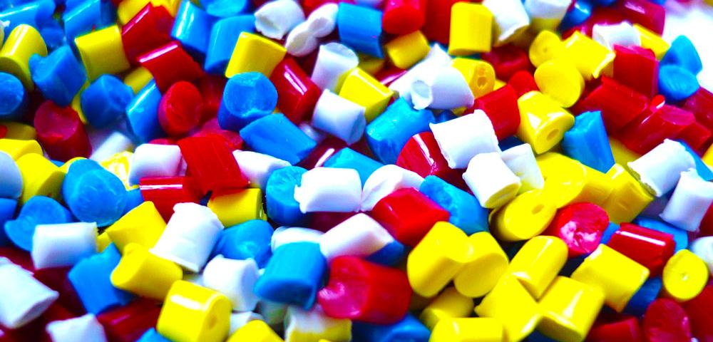

COSA SONO
Le microplastiche sono piccolissimi pezzi di plastica dello spessore inferiore al millimetro che si sono accumulati nell'ambiente.
Le microplastiche sono piccolissimi pezzi di plastica dello spessore inferiore al millimetro che si sono accumulati nell'ambiente.